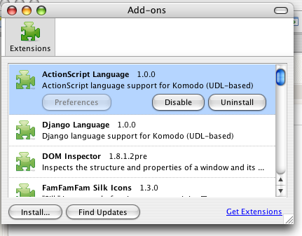
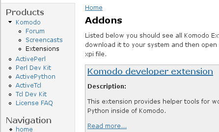
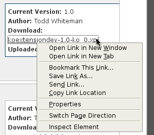
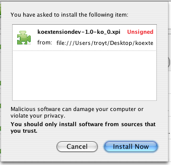
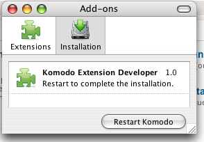

Click Tools|Extension Manager to open the extension
management dialog. Click the Get Extensions link.

Browse the Addons section and
choose an extension to install.

Save the xpi file in a convenient place on your filesystem.

In the Extension Manager dialog box, click the Install...
button. Find the xpi file you downloaded and click Open.
In the Software Installation dialog box, click
Install Now.

When prompted, click Restart Komodo to complete the
installation.

The new features provided by the extension should now be available.